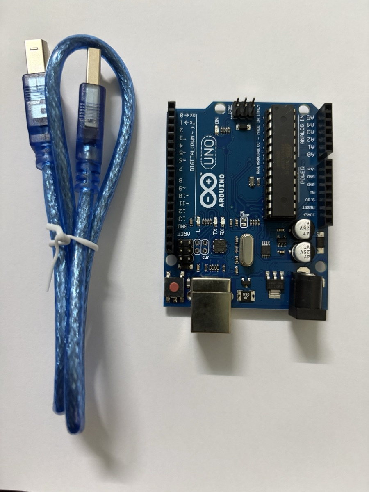

Giới thiệu Arduino & board Arduino Uno
Giới thiệu Arduino & board Arduino Uno
Note tham khảo về nền tảng Arduino và board Arduino Uno dùng cho các lab. Các linh kiện trong bộ kit xem ở bài Linh kiện điện tử cơ bản.
Arduino là gì
Arduino là một nền tảng phần cứng/phần mềm mã nguồn mở gồm hai phần:
- Board vi điều khiển — mạch in có sẵn vi điều khiển, mạch nguồn, cổng USB và các chân I/O cắm được dây trực tiếp. Board phổ biến nhất là Arduino Uno.
- Arduino IDE — môi trường viết code C/C++ (gọi là sketch), biên dịch và nạp xuống board qua USB.
Trong kiến trúc IoT, Arduino nằm ở tầng thiết bị (perception): đọc cảm biến, điều khiển cơ cấu chấp hành. Bản thân Uno không có Wi-Fi/Bluetooth — muốn kết nối mạng phải gắn thêm module (ESP8266, HC-05…) hoặc dùng board có sẵn kết nối như ESP32, Arduino Uno R4 WiFi, Nano 33 IoT.
Cấu trúc một sketch
void setup() {
// chạy 1 lần khi cấp điện hoặc nhấn reset:
// cấu hình chân, khởi tạo Serial, cảm biến...
pinMode(13, OUTPUT);
Serial.begin(9600);
}
void loop() {
// chạy lặp vô hạn sau setup()
digitalWrite(13, HIGH);
delay(500);
digitalWrite(13, LOW);
delay(500);
}Các hàm dùng nhiều nhất:
| Hàm | Ý nghĩa |
|---|---|
pinMode(pin, mode) |
Đặt chân là OUTPUT, INPUT hoặc INPUT_PULLUP |
digitalWrite(pin, HIGH/LOW) |
Xuất mức 5 V / 0 V |
digitalRead(pin) |
Đọc mức logic (HIGH/LOW) |
analogRead(pin) |
Đọc điện áp chân A0–A5, trả về 0–1023 (ADC 10 bit) |
analogWrite(pin, 0–255) |
Xuất PWM trên các chân có dấu ~ |
delay(ms) / millis() |
Dừng chương trình / đọc số ms từ lúc khởi động |
Serial.print() |
Gửi dữ liệu lên máy tính qua Serial Monitor |
Board Arduino Uno
Thông số chính
| Thông số | Giá trị |
|---|---|
| Vi điều khiển | ATmega328P, 16 MHz |
| Mức logic | 5 V |
| Bộ nhớ | Flash 32 KB (0,5 KB bootloader), SRAM 2 KB, EEPROM 1 KB |
| Chân digital | 14 chân (D0–D13), trong đó 6 chân PWM: 3, 5, 6, 9, 10, 11 |
| Chân analog | 6 chân (A0–A5), ADC 10 bit |
| Dòng mỗi chân I/O | Khuyến nghị ≤ 20 mA, tối đa tuyệt đối 40 mA |
| Nguồn cấp | USB 5 V, hoặc jack DC / chân VIN 7–12 V |
Các khu vực trên board
| Khu vực | Mô tả |
|---|---|
| Cổng USB-B | Cấp nguồn 5 V và nạp code, đồng thời là kênh Serial với máy tính |
| Jack nguồn DC | Cấp nguồn ngoài 7–12 V qua bộ ổn áp trên board |
| Nút RESET | Khởi động lại chương trình (chạy lại setup()) |
| Header digital (D0–D13) | I/O số; D0/D1 là RX/TX của Serial — tránh dùng khi đang nạp code/Serial |
| Header analog (A0–A5) | Đọc tín hiệu analog; cũng dùng được như chân digital. A4/A5 là SDA/SCL (I²C) |
| Header nguồn | 5V, 3.3V, GND (nhiều chân), VIN, IOREF, RESET |
| Header ICSP | Nạp trực tiếp cho chip, cũng là đường SPI (MISO/MOSI/SCK) |
| LED trên board | ON (có nguồn), L (nối với D13), TX/RX (nháy khi truyền dữ liệu Serial) |
Ảnh thực tế

Board trong kit là bản Uno R3 tương thích (clone). Một số điểm nhìn thấy trên ảnh:
- Chip ATmega328P dạng DIP 28 chân (con chip đen dài bên phải), cắm trên đế nên tháo thay được nếu lỡ làm hỏng chip.
- Header digital bên trái in sẵn
0 RX,1 TXvà dấu~cạnh các chân PWM3, 5, 6, 9, 10, 11. Hai chânGNDvàAREFnằm ngay sau chân 13. - Bên phải là header ANALOG IN (
A0–A5) và POWER (IOREF,RESET,3.3V,5V,GND,GND,Vin). - Bốn LED nhỏ
ON,L,TX,RXnằm giữa board. Nút RESET màu đỏ ở góc dưới bên trái. - Phía dưới có cổng USB-B (dùng với cáp xanh đi kèm: một đầu USB-A cắm máy tính, một đầu USB-B cắm board) và jack DC. Cạnh jack DC là IC ổn áp AMS1117 hạ áp từ nguồn ngoài xuống 5 V.
Lưu ý an toàn khi lắp mạch
- Rút USB trước khi thay đổi dây. Cắm nhầm 5V–GND gây ngắn mạch có thể làm hỏng cổng USB máy tính.
- Không kéo quá 20 mA mỗi chân và ~200 mA tổng từ các chân I/O; tải lớn (motor, nhiều LED, servo nhiều cái) dùng nguồn ngoài.
- Mọi thiết bị trong mạch phải chung GND.
- Không cấp quá 5 V vào chân I/O; module 3,3 V (ESP8266, một số cảm biến) cần chuyển mức logic.